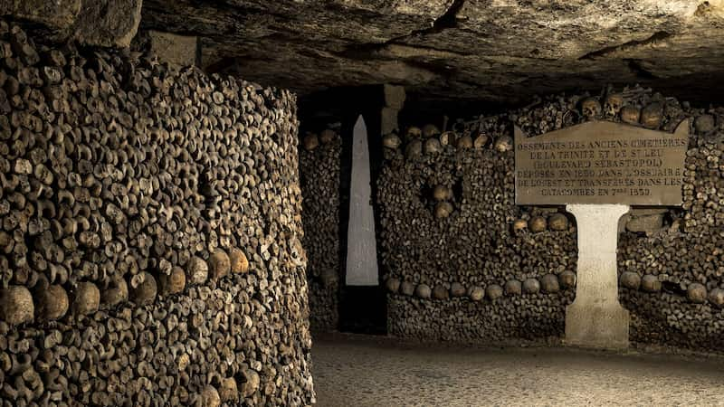

Something interesting about Paris is The Paris Catacombs! These hold the bones of over six million people, making it the world’s largest subterranean ossuary.The Empire of the DeadOrigin: Created in the late 18th century to solve the city's overflowing, unhygienic graveyards.Night shifts: Millions of bodies were exhumed and moved completely in secret at night.Artistic walls: The bones are not just piled up; they are neatly stacked into decorative walls of skulls and tibias.Secret society: A famous group called the "Kataflics" illegally explores the forbidden 99% of the tunnels, even building secret cinemas and bars underground.
